Corse e uscite in bici da Salute
Il cardio di qualsiasi app compare con mappa del percorso, ritmo e zone di frequenza cardiaca.
Allenamento con i pesi per iPhone e Apple Watch
Registra ogni serie in pochi secondi, tieni d'occhio ogni record e lascia che un coach IA pianifichi la tua settimana. Con Replex l'allenamento diventa un progresso che si vede.
Si parte gratis. Pro aggiunge il Coach IA, i tuoi piani personali e tutta la cronologia.
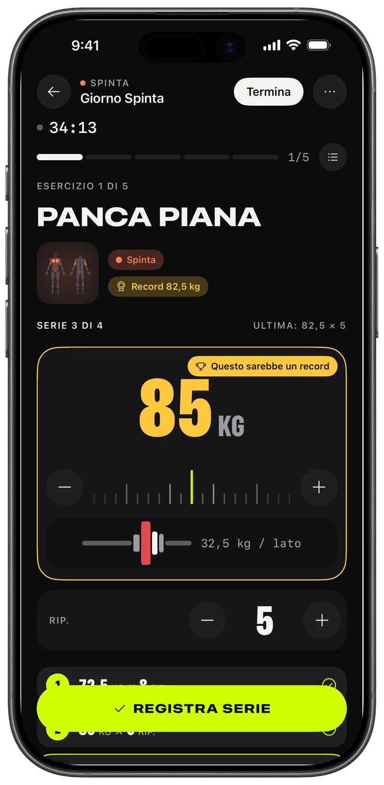
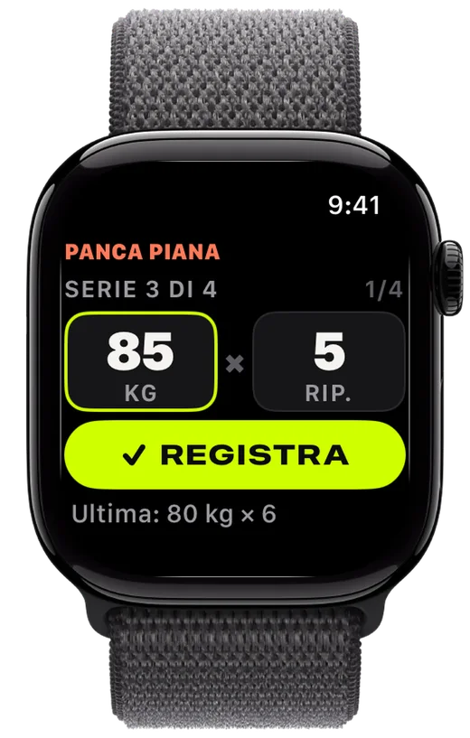
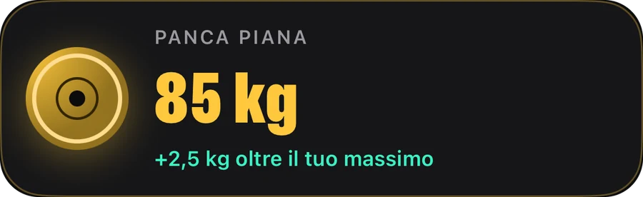
Registrazione
Carica i dischi, registra la serie, fai meglio dell'ultima volta. Replex ricorda cosa hai sollevato e prepara la serie successiva prima di te.
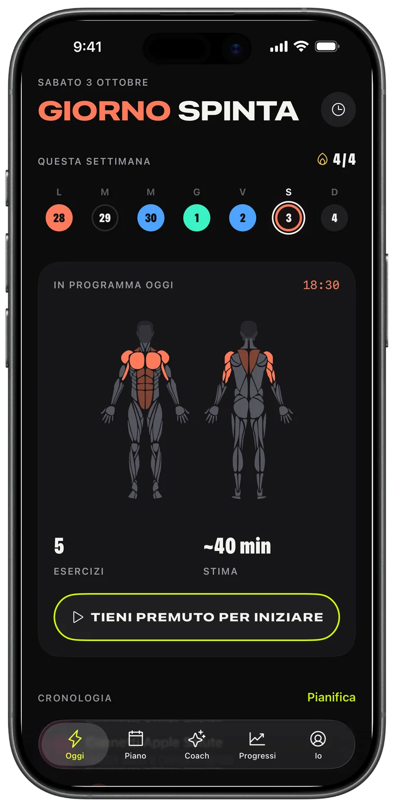
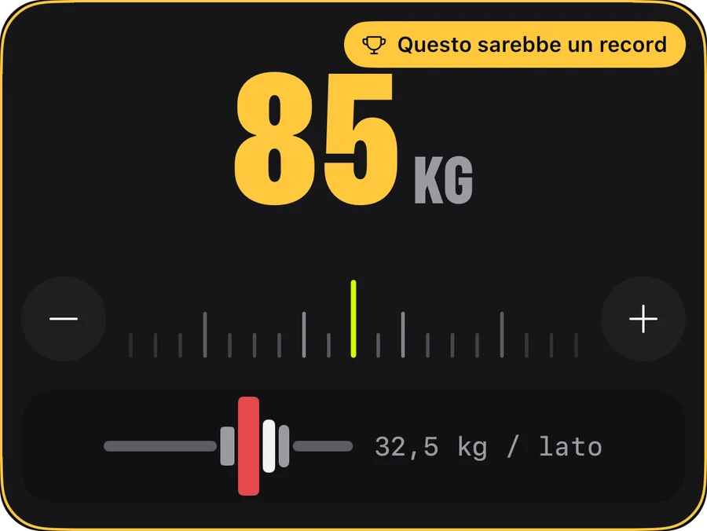
Apple Watch
Lascia il telefono nella borsa. Ruota la corona per impostare peso e ripetizioni, tocca REGISTRA e l'iPhone resta sincronizzato in tempo reale.
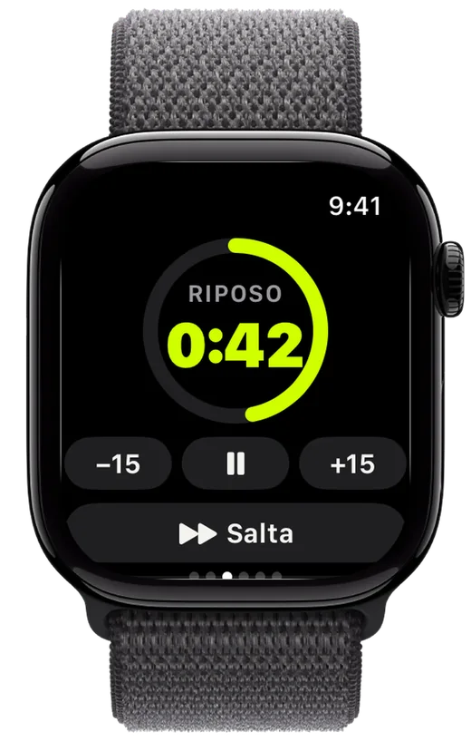
Progressi
Un volume che cresce settimana dopo settimana, ogni record che stabilisci e l'andamento di ogni esercizio: così sai che il lavoro sta dando frutti.
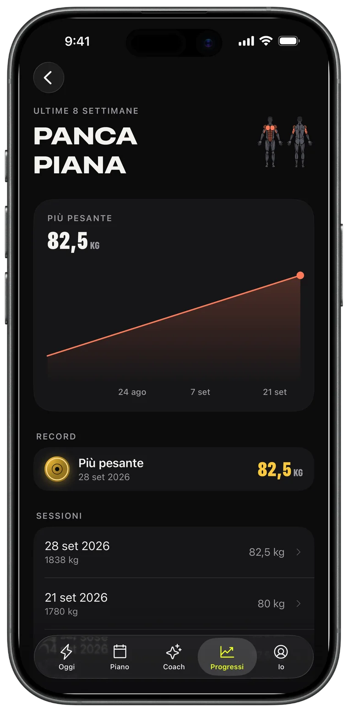
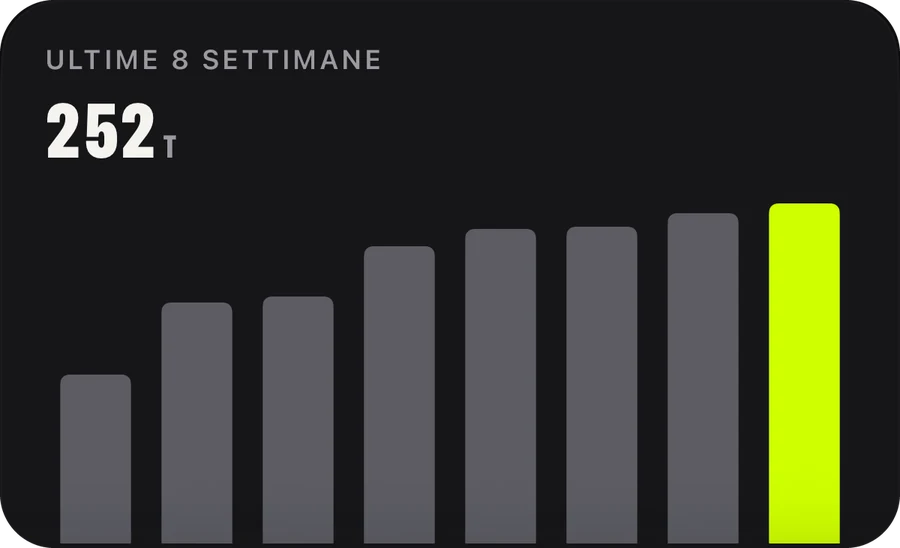
Coach IA · Pro
Chiedi una settimana e finisce in calendario. Il Coach legge il tuo allenamento reale — sessioni, record, corse — e pianifica di conseguenza.
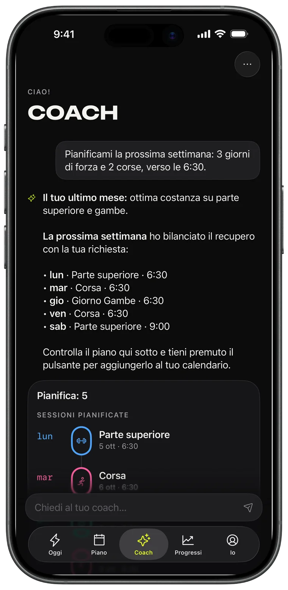
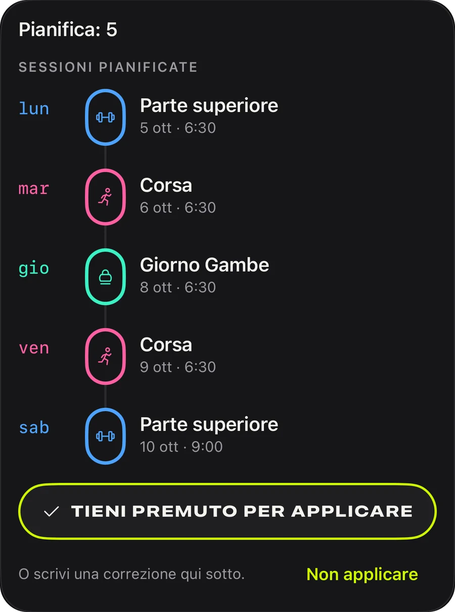
Piani
Spinta, trazione, gambe, upper/lower, full body: 44 piani pronti per iniziare oggi, oppure crea il tuo e mettilo in ripetizione.
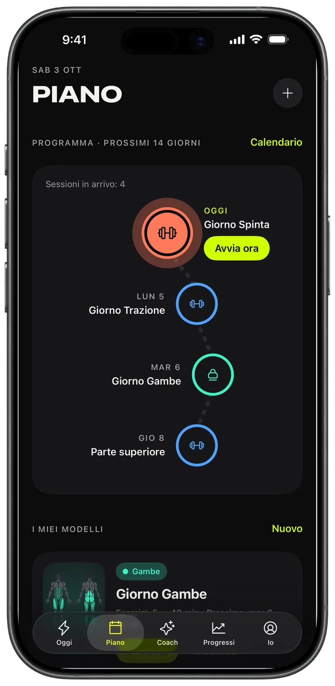
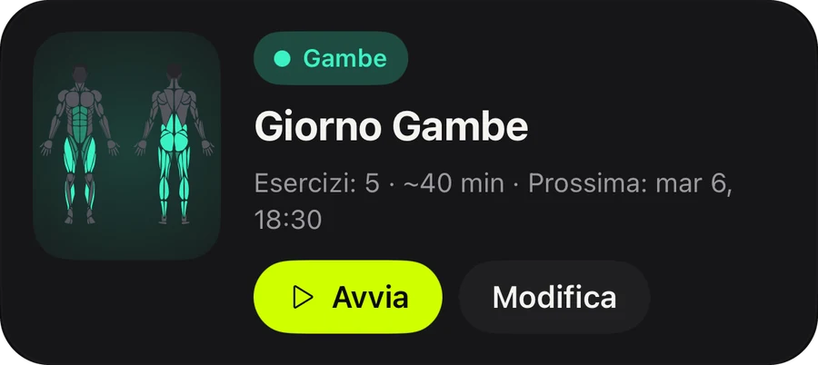
Condividi
Ogni allenamento completato diventa una story card con volume, durata e record. Pubblicala o tienila come prova.
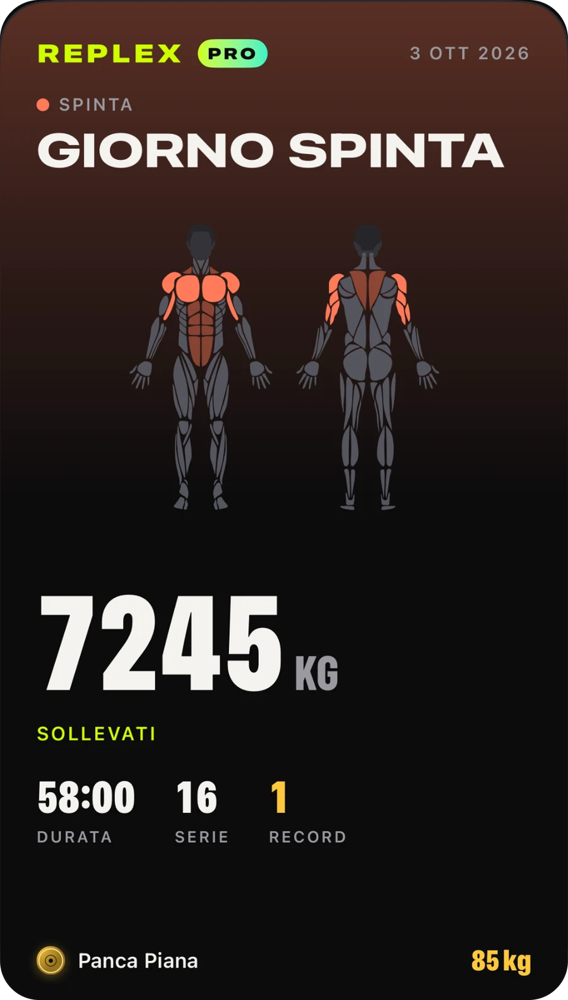
Il cardio di qualsiasi app compare con mappa del percorso, ritmo e zone di frequenza cardiaca.
Serie, recupero e frequenza cardiaca sulla schermata di blocco e nella Dynamic Island.
Allenamenti, modelli e piani su tutti i tuoi dispositivi, visibili solo a te.
Vedi cosa allena una sessione prima di iniziare e cosa hai già lavorato questa settimana.
Chili, libbre o stone; esercizi a corpo libero e a tempo inclusi.
Chiaro o scuro e tre colori d'accento: Volt, Blu e Rosa, con icone dell'app abbinate.
Tutto ciò che serve per registrare e migliorare.
Per chi pianifica in anticipo.
Pro è disponibile nell'app con abbonamento mensile, annuale o con un acquisto unico a vita. Gli abbonamenti si possono disdire in qualsiasi momento dal tuo Account Apple.
Scarica Replex e registra il tuo primo allenamento in meno di un minuto.
No. Replex funziona completamente su iPhone. Con un Apple Watch puoi registrare le serie, usare il timer di recupero e monitorare la frequenza cardiaca dal polso.
Sì. Replex si usa gratis: registrazione, timer di recupero, 5 piani a corpo libero, record delle sessioni recenti e 5 allenamenti su Apple Watch. Replex Pro — mensile, annuale o con acquisto unico a vita — aggiunge il Coach IA, tutti i 44 piani, i tuoi modelli e la programmazione, la cronologia completa e allenamenti illimitati su Watch.
Sui tuoi dispositivi e nel tuo iCloud privato. Gli allenamenti si possono salvare anche nell'app Salute. Il Coach IA vede solo ciò che gli serve per risponderti, e solo quando glielo chiedi.
Chili, libbre o stone, e il calcolatore dei dischi segue la tua unità.
In 54, tra cui italiano, inglese, spagnolo, portoghese, francese, tedesco, giapponese, coreano, cinese, arabo ed ebraico.